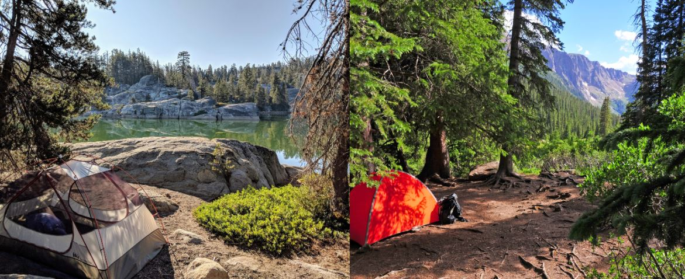
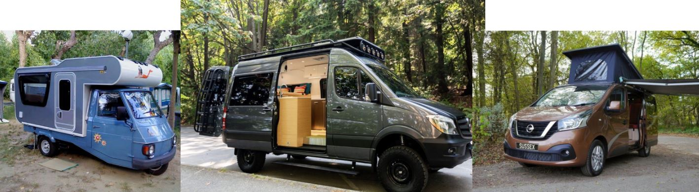
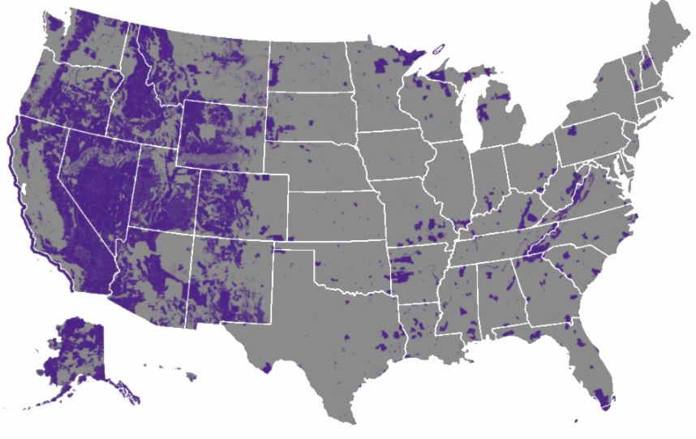
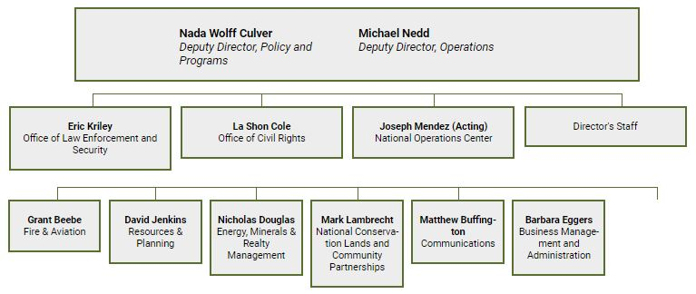
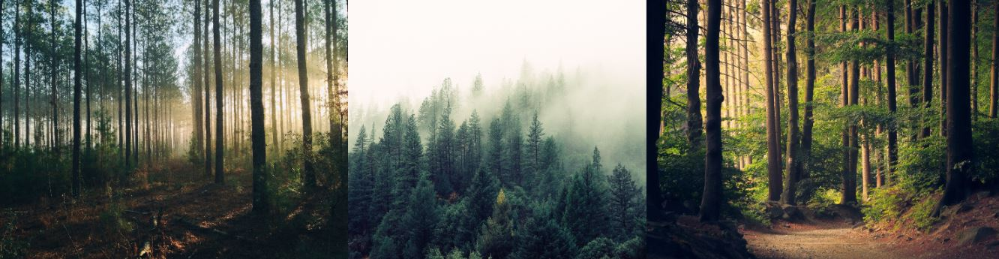

Dispersed Camping: Ancient Art Of Keeping It Simple
Dispersed camping is one of the most controversial subjects in the outdoors. It is defined as when a person stays anywhere in the National Forest that is out of the designated camping area. Camping anywhere in a designated camping area without a valid permit is a violation of Forest Service Law. (P.A. 86-1957). Many campers go to great lengths to get off the beaten path in the National Forest by “dispersing.” Many times a group will “disperse” a trip to the “dog park,” a designated and popular camping area in the backcountry, just so they can stay in the backcountry.
Dispersed camping is great for nature lovers looking to hit the open road without committing crimes against nature. If you discover nature through hiking, camping, biking or swimming, chances are you’ll want to protect it. Know that dispersed camping is committed when you leave your pack near a water source, not on the back of a chairlift as you contemplate your next move.
Why are Campervans Perfect for Free Camping?
If you have never ever experimented with van life in the past, you might have worries regarding just how to locate camping sites; particularly throughout the hectic summertime when lots of private and also public camping areas are already at full capacity. The appeal of using a campervan is that locating outdoor camping spots can be rather very easy (depending on if you know exactly where to look).
Campervans can navigate dirt roads very easily. Windy, small roads are usually how you get to the best campsites and campervans allow you to explore all those locations.
Where Can You Find Dispersed Campsites?
There's absolutely nothing fairly like opening your eyes in the morning in a near silent woodland forest that's shimmering with early morning dew. The birds sing as you get ready for your day in the woods and the morning dew fall on your face as you look up to see if the sun is out. If you camped there absolutely free, then there is no better feeling knowing you woke up to such peace and you didn't have to pay for it. The national forest offers this.
Camping in national forests calls for a bit more work than camping at a fully equipped campground. Woodland access roads aren't easily discovered, and even after finding an access road, it might take you some time to find the perfect spot to park and set up camp.
What Can I Expect From Dispersed Campsites in National Forests
Dispersed camping in a national forest is a terrific way to save some cash while you go about having your outdoor experience. Additionally, dispersed camping in national forests sort of help to prevent overcrowding at traditional campgrounds. Comparable to backpacking, your campsite will need to be self-supporting. This means that there will unlikely be any form of sinks, toilets, or any running water when you try dispersed camping.
How To Camp Responsibly in a National Forest?
Lots of people are attracted to dispersed camping over camping in a developed campground since it enables them to feel a bit closer to nature. This usually without the sound of people around, any interruptions, and also possible damages that might have been done by other campers.
Below are some guidelines you should follow to be a responsible camper.
- Check to see if the area you plan to camp in is allowing campers to camp.
- Bring your own, axe, bucket, and shovel to help properly extinguish fires.
- Bring a trash can to store all your trash, then bring all your trash to a dump area when you are done camping.
- Try not to create any new campsites if there are any available close-by.
- Do not cut down trees for firewood.
- Fire bans are usually in place at drier locations. Check with your park ranger for information.
- Dogs should be ket on a leash if the area requires that they be kept on a leash
- try to use a fire pan or camping stove instead of using resources you find around the area
What to Bring When Dispersed Camping
These are some of the things you should bring when you are dispersed camping.
- Clean/dry clothes
- Packable Warm Jacket
- Rain Jacket
- Extra warm socks
- Fleece hat
These gears are in no specific order. You can decide which items best fit your needs.
- Backpack
- Hammock
- First Aid Kit
- Water
- Food
- Cooking Supplies
- Source of light
- Sleeping bag
- Fire Starter
- Small Shovel
A backpack will always be handy for carrying essentials you might need when you go for a hike.
This offers a perfect way to sleep as long as you have trees around.
Accidents doi happen when we all go out camping and it would be great to have a first aid kit close by.
Probably the most essential thing you can bring with you.
Try to pack foods that can last for days like freeze dried food.
Bring utensils and a pot for boiling water.
Bring a source of light with you. You can use your headlight as a source of light at night to not have to use any fire.
A sleeping bag will come in handy when its time to take a nap or sleep.
WE all as campers like having the skill of knowing how to start a fire from scratch. But how useful would it be if you want to start a fire in less than 30 seconds?
This can help to get your campsite ready.
What is BLM Land?
BLM stands for Bureau Of Land Management. This is the governing body that is responsible for sustaining the productivity, health, and diversity of public lands so that present and future generations will be able to use and enjoy them.
Facts About BLM
Here are some things you might not have known about the BLM.
- BLM Lands and surrounding areas around said lands are protected by BLM firefighters.
- There were over 470,000 jobs provided by the oil boom in 2018 on BLM lands.
- BLM land offers many recreational activities for you and your whole family.
- BLM lands help to power many American homes by producing over 308 million tons of coal in 2018.
- The BLM has a grazing program where livestock are allowed to graze and keep lands maintained.
- BLM lands help students studying paleontology and by allowing them to study the lands and the artifacts that can be found there.
BLM Organization's Chart
The BLM has over 10,000 employees. This is how the organization is structured as of this date 06/15/2021.
BLM Public Safety
The BLM will always put the security, safety, as well as environmental management of public lands customers, public lands, and also staff members first. This consists of about 200 miles straight along the New Mexico international boundary, California, and also Arizona.
The BLM reinforces American sovereignty with cutting-edge campaigns as well as collaborations with government and also state firms. These initiatives are generating substantial functional outcomes on the cutting edge in the locations of prohibited contraband, preservation, and also recognizing multinational threats.
What is a National Forest?

National Forests are areas of forest that are under the management of the United States Department of Agriculture (USDA). The National Forest System manages over 193 million acres of forest land, making it the largest land management agency in the United States. These lands are managed in order to provide multiple benefits to the public, including the creation of diverse and healthy forests, important watershed protection, and recreational opportunities.
Should You Try Dispersed Camping?
Dispersed camping is for those who like privacy. If you are the kind of person that likes waking up on your campsite and not having anyone walking close by then dispersed camping is for you.
4 Dispersed Campsite Tips
Here are some tips you should use to enjoy your time dispersed camping.
- Try to get a campsite underneath a tree. This will provide you with enough shade to keep cool.
- Do not stay too close to rivers, lakes or stream. Whenever it rains, the water level might rise.
- Getting your gear setup on a flat site is best. But if you have to be on some sort of incline, try to position your head to be at the top.
- Find an area that is not loose or sandy as those types of ground does not provide adequate support for stakes.
Dispose of Your Waste Properly
A dispersed campsite will most likely not include an outhouse. When we go camping we all need to have some way to dispose of our waste. The way we do it naturally is by using a "wag bag" or by digging a six inch deep cathode that is at least 100 feet away from any source of water.
One easy way to get rid of waste or to at least hold it until you can dispose of it properly is to use a portable camping toilet. This makes camping much easier. My favorite is the Alpcour Portable Toilet.
Where Are Some Places You Can Camp
These are some of the places you can safely camp unless there have been updated rules and regulations in the area you choose.
Public land is usually marked with a yellow and brown
- Bureau of Land Management (BLM)
- National Forests
- National Grasslands
- Some City & City Parks
- Wildlife Management Areas (WMA)
- Some truck stops and Parking lots
- Some trailheads
Conclusion
Dispersed camping is best for those who love the freedom of the outdoors. Getting a good spot will help you enjoy your time away from the city.